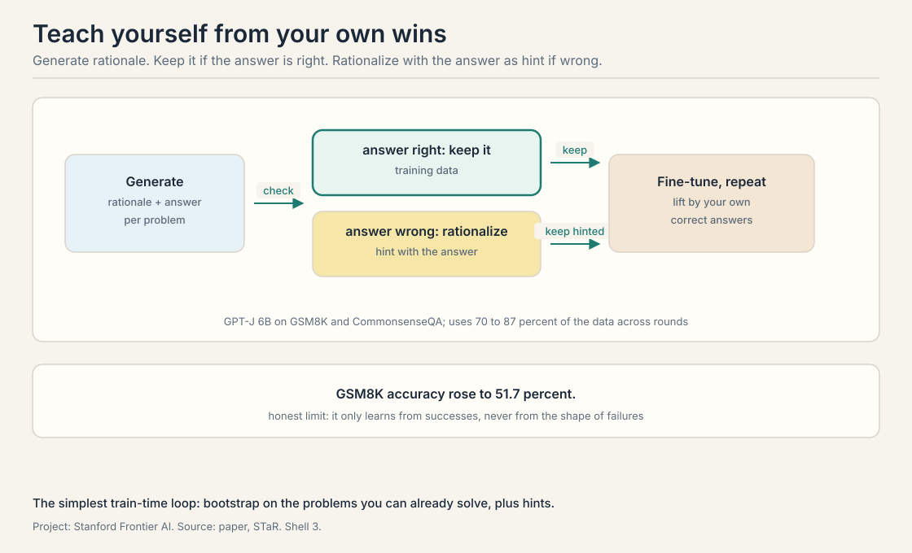
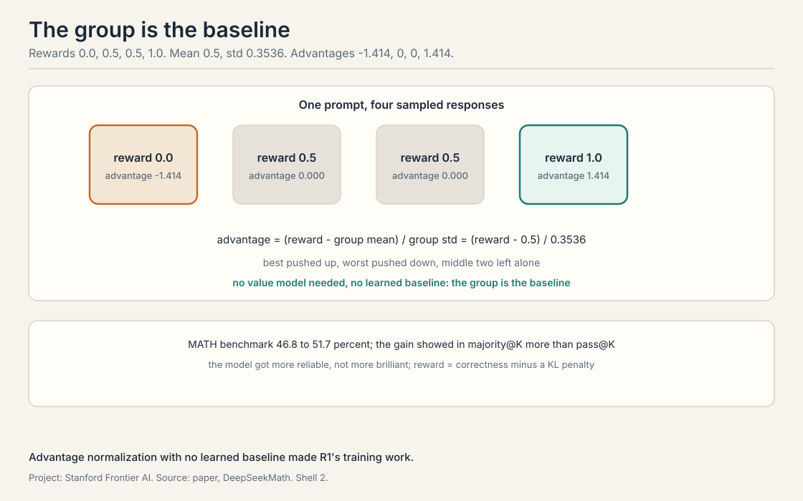
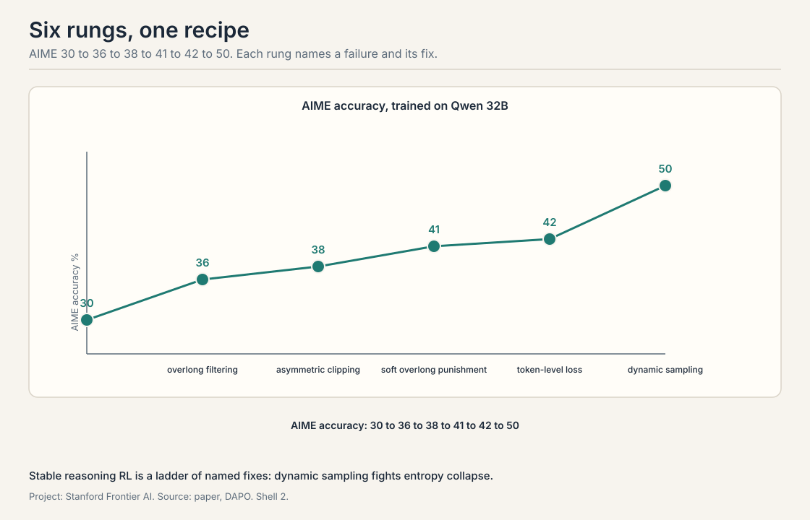

Lecture 6: Train-Time Scaling and Scaling RL
Video blocked (ad-blocker or local file mode).
Watch on YouTubeVideo not loading? Watch on YouTube
STaR self-taught reasoning, DeepSeekMath and GRPO, DAPO's recipe for reasoning RL, and the SFT-versus-RL debate with open problems.
The loop closes: training on your own answers
Builds on: Lectures 2 through 5, which spent compute at test time.
Lectures 2 through 5 spent compute at test time. This lecture spends it at train time: the model generates its own training data and learns from it. Train-time compute changes the weights. The promise: today’s expensive sampling becomes tomorrow’s cheap first try. The price: training on your own outputs can amplify your own mistakes.
STaR: bootstrap reasoning with reasoning
Builds on: The train-time loop framing, in its simplest form.
STaR, self-taught reasoner, is the simplest version of the loop. The method is rationale bootstrapping: use the model’s own correct rationales as training data. Take a model, GPT-J 6B in the paper, and a dataset of problems with answers, GSM8K, Grade School Math 8K, a set of grade-school word problems, and CommonsenseQA. For each problem, have the model generate a rationale plus an answer. If the answer is right, keep the rationale as training data. If it is wrong, try rationalization: give the model the correct answer as a hint and ask it to generate the rationale that would lead there. If the hinted rationale reaches the answer, keep it too. Then fine-tune the model on everything kept, and repeat.
The numbers: accuracy on GSM8K rose to 51.7 percent, using 70 to 87 percent of the data across rounds. The model taught itself from the problems it could already solve, plus the ones it could solve with a hint.

The lecture is honest about the limits. STaR plateaus. It is not true reinforcement learning: it only learns from successes, never from the shape of failures. The method rests on three assumptions the lecture names: the model can already solve some problems, the answer key exists to check against, and rationalization with a hint produces valid reasoning rather than post-hoc stories. The follow-ups, V-STaR and Quiet-STaR, extend the idea, but the core stays a bootstrap: lift yourself by your own correct answers.
DeepSeekMath and GRPO: the advantage trick
Builds on: STaR’s bootstrapping, moving to real reinforcement learning for reasoning.
DeepSeekMath is the lecture’s bridge from bootstrapping to real reinforcement learning for reasoning. The recipe starts from DeepSeek-Coder, not a general model: code training transfers to math. The data is curated from Common Crawl with a pipeline the lecture details: seed on arXiv and OpenWebMath, train a classifier, crawl, filter, deduplicate. The training algorithm is GRPO, group relative policy optimization.
GRPO’s idea fits in one formula. For each prompt, sample a group of responses and score them. The advantage of a response is its reward minus the group mean, divided by the group standard deviation: advantage normalization with no learned baseline. A worked toy: rewards 0.0, 0.5, 0.5, 1.0. The mean is 0.5. The standard deviation is 0.3536. The advantages are -1.414, 0.0, 0.0, 1.414. The best response gets pushed up, the worst gets pushed down, and the middle two are left alone. No separate value model, no learned baseline: the group is the baseline.
The engineering detail the lecture stresses: GRPO needs four copies of the model in memory, the policy, the reference, and two for the optimizer state, later reduced to three. The reward is the answer’s correctness minus a KL penalty, a term that keeps the policy from drifting too far from the reference model. The result: MATH benchmark accuracy rose from 46.8 to 51.7 percent, and the gain showed in majority@K, the vote over K samples, more than in pass@K. The model got more reliable, not more brilliant.

DAPO: the recipe, written down
Builds on: GRPO, distilling the hard-won recipe for stable reasoning RL.
DAPO, Decoupled Clip and Dynamic Sampling Policy Optimization, is the lecture’s payoff: an open-source RL system that distills the hard-won recipe for stable reasoning RL, trained on Qwen 32B. The lecture presents it as a ladder. Each rung names a failure and its fix.
The climb, AIME, American Invitational Mathematics Examination, accuracy at each step: start at 30. Overlong filtering, drop responses that ramble past the length limit, lifts it to 36. Asymmetric clipping, allow the policy to move up more than down on good tokens, lifts it to 38. Soft overlong punishment, penalize length smoothly instead of cutting off, lifts it to 41. Token-level loss, weight each token’s contribution instead of each response’s, lifts it to 42. Dynamic sampling, keep generating until the batch has enough non-trivial examples, lifts it to 50.
Two failure modes the lecture names. Entropy collapse: the policy’s outputs become deterministic too early, exploration dies, and training stalls on a local optimum. Dynamic sampling fights it by keeping the batch informative. And the token-versus-response distinction: a long response with one good token should not get the same update as a short response that is all good. Token-level loss fixes the accounting.

SFT versus RL: what each is for
Builds on: STaR, GRPO, and DAPO, asking the field’s live question about what each method is for.
The lecture steps back and asks the field’s live question. The framing it offers: SFT, supervised fine-tuning, is data-rich and fast. Show the model many examples and it absorbs the pattern. RL, reinforcement learning, is a hill-climb from few examples: it needs the infrastructure, the verifier, and the patience, but it can find behaviors no demonstration contained. SFT teaches the model what good looks like. RL teaches it to search for better.
The lecture notes the industry gossip honestly: claims like Grok 4 being “50 percent RL” circulate without public evidence. Treat them as rumors, not results. The open problems the lecture leaves: pass@K still lags behind majority@K, the reliability-versus-brilliance gap from DeepSeekMath writ large. Whether the learned behaviors are emergent or were already prevalent in the data. And learning from failures: every method in this lecture learns from successes. The failures, the richest signal, are still mostly discarded.
Problem: a word problem with answer 11. Round one: the model generates a rationale ending in 9. Wrong, discard. The model is given the hint, answer 11, and generates a rationale ending in 11. Keep the hinted rationale. Fine-tune on it. Round two: the model now generates the right rationale unhinted on similar problems. The hint bootstraps the reasoning the model could not find alone. Then STaR trains the model to confabulate. The method assumes rationalization produces valid reasoning. The lecture names this as an assumption, not a result. A verifier that checks the steps, not just the answer, would close the hole. STaR has only the answer key.
The group is the baseline. Sample several responses to the same prompt, score them, and normalize: advantage equals reward minus group mean over group standard deviation. The comparison is relative within the group, so no separate model needs to predict absolute values. In the toy, the two middle responses get advantage exactly 0: they define the baseline the others are measured against. Everything is relative. If all four responses are wrong, the least wrong gets a positive advantage and the policy learns to be least wrong. GRPO needs the group to contain signal: at least one response better than the rest by a margin the reward can see.
Entropy measures the policy’s randomness. Early in RL the policy explores: many different responses. If a few lucky responses get high reward, the policy collapses onto them, entropy falls to near zero, and exploration dies. Training then hill-climbs a local optimum. Dynamic sampling keeps generating until each batch contains enough responses that are neither all-right nor all-wrong, so every batch carries a learning signal and the policy keeps exploring. Temperature raises randomness everywhere, including on problems the model already solves. Dynamic sampling is targeted: it spends the extra generation where the batch needs signal. The lecture’s ladder shows it as the biggest single rung, 42 to 50.
A response-level loss gives every token in a response the same update. A 200-token response with one brilliant token and 199 filler tokens gets the same per-token push as a 10-token response that is all good. The filler learns as much as the brilliance. Token-level loss weights each token’s contribution, so credit lands where it belongs. Cousin, not twin. Both fix credit assignment. RLEF’s turn-level value estimates the attempt’s worth for the advantage. DAPO’s token-level loss fixes the accounting of the update. One is about what to learn from, the other about how to count it.
When you have the data and the pattern is known. SFT is fast, stable, and data-rich: show the model ten thousand good traces and it absorbs the shape. Choose RL when the demonstrations do not exist or the behavior must exceed them: no human writes the optimal reasoning trace, so the model must search. The lecture’s rule: SFT for what good looks like, RL for better than demonstrated. A verifier and infrastructure. SFT needs examples. RL needs a reward signal per attempt, the sampling machinery, and the stability recipe: the whole DAPO ladder. That is why the lecture calls RL a hill-climb that needs infrastructure.
Majority@K measures reliability: the most common answer across K samples is right. Pass@K measures reach: at least one sample is right. RL with a correctness reward teaches the model to put its probability mass on the right answer, which raises the majority vote. It does not teach the model new ways to be right, which is what pass@K needs. The model got more consistent, not more creative. No, it is the expected signature of RL on verifiable rewards. The open problem the lecture names is the other direction: learning that expands what the model can reach, not just how reliably it reaches it.
The policy samples responses the training data never showed. Most are bad. A few stumble into a better reasoning pattern and get high reward. The update pushes the policy toward them. Repeat for thousands of steps and the policy settles on patterns no human demonstrated. SFT cannot do this: it only imitates what it is shown. The search is the difference. The KL penalty and the verifier. The KL term keeps the policy near the reference model, so it cannot drift into gibberish that happens to score. The verifier decides what “better” means. A gameable verifier turns the search into reward hacking, the loop’s permanent tax.
Recap: the whole lesson on one screen
- Bootstrap from wins. STaR keeps right rationales, rationalizes wrong ones with the answer as hint. GSM8K to 51.7 percent. Then it plateaus.
- The group is the baseline. GRPO advantage: reward minus mean over std. Toy: -1.414, 0, 0, 1.414. No value model.
- The ladder. DAPO: 30 to 36 to 38 to 41 to 42 to 50 on AIME. Each rung fixes a named failure.
- Entropy dies first. Collapse kills exploration. Dynamic sampling keeps batches informative.
- SFT shows, RL searches. SFT is data-rich and fast. RL needs a verifier and infrastructure but can exceed demonstrations.
- Reliability before brilliance. Majority@K rises before pass@K. Learning from failures is still open.
Used where, as of October 2026
- DeepSeek-R1 (January 2025): the model that made GRPO famous. Its training is the public proof of the DeepSeekMath recipe at scale.
- RLVR across labs: reinforcement learning on verifiable rewards is the dominant 2025-2026 paradigm (agentic-RL survey, 2026), and DeepSeek-R1 (January 2025) made it the default industry template. The DAPO recipe’s components, dynamic sampling, token-level loss, length handling, ship in open implementations.
- Qwen reasoning models: the DAPO paper’s Qwen 32B experiments feed directly into the open reasoning model line.
- Quiet-STaR: the STaR idea extended to reasoning at every token. Zelikman et al. showed it on Mistral 7B: CommonsenseQA rose from 36.3 to 47.2 percent, zero-shot, with no task fine-tuning (arXiv, March 2024).
Official sources and further reading
Official: - CS329A Part 6: Train-Time Scaling and Scaling RL (Autumn 2025). https://www.youtube.com/watch?v=yVnmHSAy3ck
Further reading: - Zelikman et al., “STaR” (2022). https://arxiv.org/abs/2203.14465 - Shao et al., “DeepSeekMath” (2024). https://arxiv.org/abs/2402.03300 - Yu et al., “DAPO” (2025). https://arxiv.org/abs/2503.14476
Caveats from these sources. The DAPO ladder numbers are as reported in the lecture from the paper. The “50 percent RL” Grok claim is cited in the lecture as unverified industry gossip. The STaR assumptions are the lecture’s, not the paper’s, framing.
Connections to the other courses
- CS329H: the RLHF and preference machinery that GRPO and DAPO extend: reward models, KL penalties, and policy optimization.
- CS336: where the base models come from: DeepSeek-Coder as a starting point, and why code training transfers to math.
- CS229: policy gradients and advantage estimation: the classical roots of PPO, GRPO, and the DAPO recipe.
Sources
- LECTURECS329A Part 6: Train-Time Scaling and Scaling RL (Autumn 2025, taught 2025-10-10, published 2026-08)
- PAPERZelikman et al., STaR: Bootstrapping Reasoning With Reasoning (2022)
- PAPERShao et al., DeepSeekMath: Pushing the Limits of Mathematical Reasoning in Open Language Models (2024)
- PAPERYu et al., DAPO: An Open-Source LLM Reinforcement Learning System at Scale (2025)